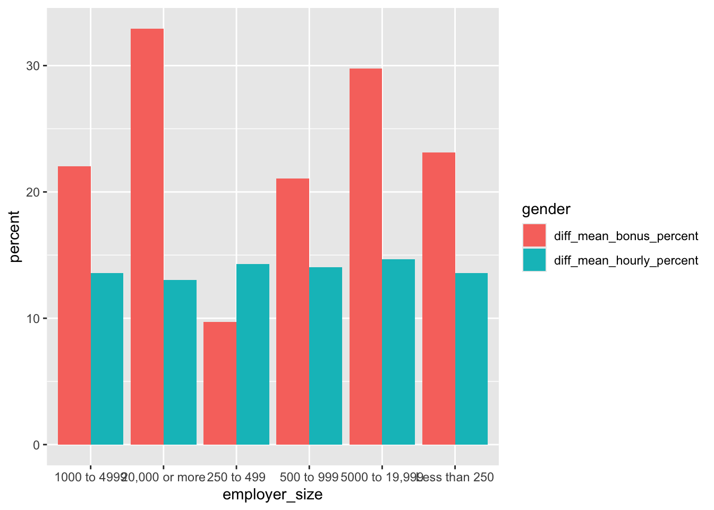

# A tibble: 30 × 8
country continent `1967` `1972` `1977` `1982` `1987` `1992`
<fct> <fct> <dbl> <dbl> <dbl> <dbl> <dbl> <dbl>
1 Albania Europe 66.2 67.7 68.9 70.4 72 71.6
2 Austria Europe 70.1 70.6 72.2 73.2 74.9 76.0
3 Belgium Europe 70.9 71.4 72.8 73.9 75.4 76.5
4 Bosnia and Herzegovina Europe 64.8 67.4 69.9 70.7 71.1 72.2
5 Bulgaria Europe 70.4 70.9 70.8 71.1 71.3 71.2
6 Croatia Europe 68.5 69.6 70.6 70.5 71.5 72.5
7 Czech Republic Europe 70.4 70.3 70.7 71.0 71.6 72.4
8 Denmark Europe 73.0 73.5 74.7 74.6 74.8 75.3
9 Finland Europe 69.8 70.9 72.5 74.6 74.8 75.7
10 France Europe 71.6 72.4 73.8 74.9 76.3 77.5
# ℹ 20 more rows6 Tidy Data
6.1 What is tidy data anyway?
So far, your manipulation of data has focused on processes which make use of tidyverse functions, including filtering rows, selecting columns and creating new columns, as well as plotting data on charts. All of the functions you’ve seen have been easy to apply to the data you have.
Unfortunately, in real projects, this often won’t be the case because the data you’ll have often won’t be in tidy format, which is how most tidyverse functions expect to receive data.
Tidy data is a standardised structure of data designed make data cleaning and processing steps easy, and is straightforward even if it seems unusual at first.
You are likely to be most familiar with data laid out in a “messy” structure like the one below:
Here, the data has one row per country and then multiple columns, with one for each year. This may seem relatively logical and quite tidy, but the problems start when you realise that there are multiple other quite logical and tidy ways to lay this data out if there are few restrictions. For example, it could quite easily be shown with one country per column, and a year per row:
# A tibble: 12 × 143
year Afghanistan Albania Algeria Angola Argentina Australia Austria Bahrain
<int> <dbl> <dbl> <dbl> <dbl> <dbl> <dbl> <dbl> <dbl>
1 1952 28.8 55.2 43.1 30.0 62.5 69.1 66.8 50.9
2 1957 30.3 59.3 45.7 32.0 64.4 70.3 67.5 53.8
3 1962 32.0 64.8 48.3 34 65.1 70.9 69.5 56.9
4 1967 34.0 66.2 51.4 36.0 65.6 71.1 70.1 59.9
5 1972 36.1 67.7 54.5 37.9 67.1 71.9 70.6 63.3
6 1977 38.4 68.9 58.0 39.5 68.5 73.5 72.2 65.6
7 1982 39.9 70.4 61.4 39.9 69.9 74.7 73.2 69.1
8 1987 40.8 72 65.8 39.9 70.8 76.3 74.9 70.8
9 1992 41.7 71.6 67.7 40.6 71.9 77.6 76.0 72.6
10 1997 41.8 73.0 69.2 41.0 73.3 78.8 77.5 73.9
11 2002 42.1 75.7 71.0 41.0 74.3 80.4 79.0 74.8
12 2007 43.8 76.4 72.3 42.7 75.3 81.2 79.8 75.6
# ℹ 134 more variables: Bangladesh <dbl>, Belgium <dbl>, Benin <dbl>,
# Bolivia <dbl>, `Bosnia and Herzegovina` <dbl>, Botswana <dbl>,
# Brazil <dbl>, Bulgaria <dbl>, `Burkina Faso` <dbl>, Burundi <dbl>,
# Cambodia <dbl>, Cameroon <dbl>, Canada <dbl>,
# `Central African Republic` <dbl>, Chad <dbl>, Chile <dbl>, China <dbl>,
# Colombia <dbl>, Comoros <dbl>, `Congo, Dem. Rep.` <dbl>,
# `Congo, Rep.` <dbl>, `Costa Rica` <dbl>, `Cote d'Ivoire` <dbl>, …Having this kind of wide variety of potential structures means that when you receive data and try to use it, it’s almost impossible to have any kind of standardised approach to this non-standard data structuring. For example, if you want the most recent year of data from an annual dataset, would you need to select a column or filter some rows; it would depend entirely on the dataset!
In contrast, tidy data always has the same format:
Every column is a variable.
Every row is an observation.
Every cell is a single value.
This is best explained in a tidy example:
# A tibble: 10 × 6
country continent year lifeExp pop gdpPercap
<fct> <fct> <int> <dbl> <int> <dbl>
1 Afghanistan Asia 1952 28.8 8425333 779.
2 Afghanistan Asia 1957 30.3 9240934 821.
3 Afghanistan Asia 1962 32.0 10267083 853.
4 Afghanistan Asia 1967 34.0 11537966 836.
5 Afghanistan Asia 1972 36.1 13079460 740.
6 Afghanistan Asia 1977 38.4 14880372 786.
7 Afghanistan Asia 1982 39.9 12881816 978.
8 Afghanistan Asia 1987 40.8 13867957 852.
9 Afghanistan Asia 1992 41.7 16317921 649.
10 Afghanistan Asia 1997 41.8 22227415 635.In this dataset, each column is a different variable; years, life expectancy, countries. These are best thought of as different categories that your data can fall into, not values of those categories. For example, year is a variable, but each possible year in that column is a value, and therefore shouldn’t be assigned its own column.
Every row is an observation; a unique combination of the variables included in the data. For example, there is only one observation (row) of data in Afghanistan for 1952, and then a separate one for the same country in 1957.
And importantly, there is only one value in each cell; this seems obvious but is suprisingly often not the case, especially when combined values such as age and sex (25M, 54F) or section and subsection (5b or 8c) are created.
6.2 Tidying messy data
Inevitably, you will often want to use data which is not in tidy format. Luckily the tidyverse package tidyr is designed to help with this, and contains a number of functions designed to tidy messy data. The functions you will want to use most frequently from this are the pivot verbs.
6.2.1 Pivot longer
The pivot_longer function does exactly what the name suggests, pivots data from a wide format (with many columns and few rows) to a long format (with many rows and few columns). This is very useful when you have data which has values as column names, and you want to gather these together into a single column of multiple values instead.
pay_gap <- read_csv('https://raw.githubusercontent.com/rfordatascience/tidytuesday/master/data/2022/2022-06-28/paygap.csv') |>
select(employer_name, male_bonus_percent, female_bonus_percent, date_submitted) This example uses the above dataset; a subsection UK company pay gap data, with male and female bonus percentages displayed in different columns. According to tidy data principles, this data would be easier to use if this data was stored in a single column with an additional variable indicating whether these were male or female bonuses.
Using pivot_longer we can specify the columns we’re talking about using the cols argument. This can be done in the same way as in the select function, either by specifying columns you wish to include or those you want to exclude (using the -).
There are several ways to use the pivot_longer function.
##Pivoting data; note that cols listed are the ones we want to include in the pivoting
pay_gap_long <- pay_gap |>
pivot_longer(cols = c(male_bonus_percent, female_bonus_percent))##Pivoting data; this returns the same result as the previous code, but the columns listed are excluded from the pivoting, so any not listed are pivoted
pay_gap_long <- pay_gap |>
pivot_longer(cols = -c(employer_name, date_submitted))The other two arguments you may want to use are names_to and values_to, which allow you to specify the names of the columns you want to put the current column names (male_bonus_percent and female_bonus_percent) and values (the values in the two existing columns) into. If these are not specified, they will default to “name” and “value”, as in the examples above.
pay_gap_long <- pay_gap |>
pivot_longer(cols = c(male_bonus_percent, female_bonus_percent),
names_to = "gender",
values_to = "percent")6.2.2 Exercise
10:00
- Using the inbuilt dataset
billboard, pivot the week columns into a single long column. Call the datasetbillboard_long
Solution
#Option 1: Excluding columns not being pivoted
billboard_long <- billboard |>
pivot_longer(cols = -c(artist, track, date.entered),
names_to = "week",
values_to = "rank")
#Option 2: Specifying columns range explicitly
billboard_long <- billboard |>
pivot_longer(cols = wk1:w76,
names_to = "week",
values_to = "rank")
#Option 3: Using starts_with()
billboard_long <- billboard |>
pivot_longer(cols = starts_with("wk"),
names_to = "week",
values_to = "rank")6.3 Combining data tidying with data manipulation
The real power in tidy data comes with using it in combination with other dplyr verbs such as filtering, selecting and mutating. For example, in the full pay gap dataset, we can calculate whether there’s a difference in the hourly pay and bonuses by gender for different sizes of company:
pay_gap_summary <- read_csv('https://raw.githubusercontent.com/rfordatascience/tidytuesday/master/data/2022/2022-06-28/paygap.csv') |>
#Select the columns we're interested in
select(employer_name, diff_mean_hourly_percent, diff_mean_bonus_percent, employer_size) |>
#Pivot to gather up all of the mean values into one column
pivot_longer(cols = -c(employer_name, employer_size), names_to = "gender", values_to = "percent") |>
#Group by employer size and variable type
group_by(employer_size, gender) |>
#Summarise by calculating means
dplyr::summarise(percent = mean(percent, na.rm = TRUE)) |>
#Remove companies which didn't specify a size
filter(employer_size != "Not Provided")6.4 Tidy data and plotting
The value of having a tidy dataset is also obvious when you come to plot your data in ggplot. Having a single variable in a column means that you’re able to assign that column to an aesthetic in ggplot, and therefore change the colour, shape, faceting, etc on the basis of that value! This opens the door to creating increasingly complex and informative (and pretty!) charts.
##Plot using the tidy data
ggplot(pay_gap_summary, aes(x = employer_size,
y = percent,
fill = gender))+ #Colours can be assigned to the different data types
geom_col(position = "dodge") #makes bars sit next to eachother
6.4.1 Exercise
15:00
- Using the inbuilt dataset
relig_income, pivot the income columns into a long dataset. - Assign this to an object called
income_long - Using the dataset income_long you created, plot a bar chart in ggplot. Use religion as the x axis and the count of people as the y axis.
- Assign the income groupings to the colour aesthetic.
Solution
#Tidy the data using pivot_longer()
income_long <- relig_income |>
pivot_longer(cols = -religion,
names_to = "income_group",
values_to = "count")
#Plot your data
income_chart <-
ggplot(income_long, aes(x = religion, y = count, fill = income_group)) +
#stat = identity creates a stacked bar chart
geom_bar(stat = "identity") +
labs(x = "Religion", y = "Number of People", fill = "Income Group") +
theme_minimal()
#print() allows you to view the chart in the 'Plots' tab
print(income_chart)6.5 Multiple data frames
It’s rare that a data analysis involves only a single data frame. Typically you have many data frames, and you must join them together to answer the questions that you’re interested in.
In this lesson, you’ll learn about the most important types of joins:
- Mutating joins, which add new variables to one data frame from matching observations in another.
6.6 Keys: Connecting your data frames
To understand joins, you need to first understand how two tables can be connected through a pair of keys. Every join involves a pair of keys:
A primary key is a variable or set of variables that uniquely identifies each observation. A foreign key is a variable (or set of variables) that corresponds to a primary key in another table.
When more than one variable is needed to form a key, it’s called a compound key. Let’s look at some examples from the nycflights13 package:
airlinesrecords two pieces of data about each airline: its carrier code and its full name. You can identify an airline with its two letter carrier code, makingcarrierthe primary key.nycflights13::airlines# A tibble: 16 × 2 carrier name <chr> <chr> 1 9E Endeavor Air Inc. 2 AA American Airlines Inc. 3 AS Alaska Airlines Inc. 4 B6 JetBlue Airways 5 DL Delta Air Lines Inc. 6 EV ExpressJet Airlines Inc. 7 F9 Frontier Airlines Inc. 8 FL AirTran Airways Corporation 9 HA Hawaiian Airlines Inc. 10 MQ Envoy Air 11 OO SkyWest Airlines Inc. 12 UA United Air Lines Inc. 13 US US Airways Inc. 14 VX Virgin America 15 WN Southwest Airlines Co. 16 YV Mesa Airlines Inc.airportsrecords data about each airport. You can identify each airport by its three letter airport code, makingfaathe primary key.airports# A tibble: 1,458 × 8 faa name lat lon alt tz dst tzone <chr> <chr> <dbl> <dbl> <dbl> <dbl> <chr> <chr> 1 04G Lansdowne Airport 41.1 -80.6 1044 -5 A Amer… 2 06A Moton Field Municipa… 32.5 -85.7 264 -6 A Amer… 3 06C Schaumburg Regional 42.0 -88.1 801 -6 A Amer… 4 06N Randall Airport 41.4 -74.4 523 -5 A Amer… 5 09J Jekyll Island Airport 31.1 -81.4 11 -5 A Amer… 6 0A9 Elizabethton Municip… 36.4 -82.2 1593 -5 A Amer… 7 0G6 Williams County Airp… 41.5 -84.5 730 -5 A Amer… 8 0G7 Finger Lakes Regiona… 42.9 -76.8 492 -5 A Amer… 9 0P2 Shoestring Aviation … 39.8 -76.6 1000 -5 U Amer… 10 0S9 Jefferson County Intl 48.1 -123. 108 -8 A Amer… # ℹ 1,448 more rowsplanesrecords data about each plane. You can identify a plane by its tail number, makingtailnumthe primary key.planes# A tibble: 3,322 × 9 tailnum year type manufacturer model engines seats speed <chr> <int> <chr> <chr> <chr> <int> <int> <int> 1 N10156 2004 Fixed wing… EMBRAER EMB-… 2 55 NA 2 N102UW 1998 Fixed wing… AIRBUS INDU… A320… 2 182 NA 3 N103US 1999 Fixed wing… AIRBUS INDU… A320… 2 182 NA 4 N104UW 1999 Fixed wing… AIRBUS INDU… A320… 2 182 NA 5 N10575 2002 Fixed wing… EMBRAER EMB-… 2 55 NA 6 N105UW 1999 Fixed wing… AIRBUS INDU… A320… 2 182 NA 7 N107US 1999 Fixed wing… AIRBUS INDU… A320… 2 182 NA 8 N108UW 1999 Fixed wing… AIRBUS INDU… A320… 2 182 NA 9 N109UW 1999 Fixed wing… AIRBUS INDU… A320… 2 182 NA 10 N110UW 1999 Fixed wing… AIRBUS INDU… A320… 2 182 NA # ℹ 3,312 more rows # ℹ 1 more variable: engine <chr>weatherrecords data about the weather at the origin airports. You can identify each observation by the combination of location and time, makingoriginandtime_hourthe compound primary key.weather# A tibble: 26,115 × 15 origin year month day hour temp dewp humid wind_dir <chr> <int> <int> <int> <int> <dbl> <dbl> <dbl> <dbl> 1 EWR 2013 1 1 1 39.0 26.1 59.4 270 2 EWR 2013 1 1 2 39.0 27.0 61.6 250 3 EWR 2013 1 1 3 39.0 28.0 64.4 240 4 EWR 2013 1 1 4 39.9 28.0 62.2 250 5 EWR 2013 1 1 5 39.0 28.0 64.4 260 6 EWR 2013 1 1 6 37.9 28.0 67.2 240 7 EWR 2013 1 1 7 39.0 28.0 64.4 240 8 EWR 2013 1 1 8 39.9 28.0 62.2 250 9 EWR 2013 1 1 9 39.9 28.0 62.2 260 10 EWR 2013 1 1 10 41 28.0 59.6 260 # ℹ 26,105 more rows # ℹ 6 more variables: wind_speed <dbl>, wind_gust <dbl>, # precip <dbl>, pressure <dbl>, visib <dbl>, time_hour <dttm>
The foreign keys in the flights dataset connect to the primary keys of these other tables:
flights$tailnumconnects to planes$tailnum flights$carrier connects to airlines$carrier flights$origin and flights$dest connect to airports$faa flights$origin and flights$time_hour together connect to weather$origin and weather$time_hour
These relationships are summarized visually in Figure 6.1.

6.6.1 Checking primary keys
It’s good practice to verify that primary keys truly uniquely identify each observation. One way to do that is to count the primary keys and look for entries where the count is greater than one. One way to do that is to count() the primary keys and look for entries where n is greater than one. This reveals that planes and weather both look good:
planes |>
count(tailnum) |>
filter(n > 1)# A tibble: 0 × 2
# ℹ 2 variables: tailnum <chr>, n <int>weather |>
count(time_hour, origin) |>
filter(n > 1)# A tibble: 0 × 3
# ℹ 3 variables: time_hour <dttm>, origin <chr>, n <int>You should also check for missing values in your primary keys — if a value is missing then it can’t identify an observation!
planes |>
filter(is.na(tailnum))# A tibble: 0 × 9
# ℹ 9 variables: tailnum <chr>, year <int>, type <chr>, manufacturer <chr>,
# model <chr>, engines <int>, seats <int>, speed <int>, engine <chr>weather |>
filter(is.na(time_hour) | is.na(origin))# A tibble: 0 × 15
# ℹ 15 variables: origin <chr>, year <int>, month <int>, day <int>, hour <int>,
# temp <dbl>, dewp <dbl>, humid <dbl>, wind_dir <dbl>, wind_speed <dbl>,
# wind_gust <dbl>, precip <dbl>, pressure <dbl>, visib <dbl>,
# time_hour <dttm>6.6.2 Exercise
10:00
weatheronly contains information for the three origin airports in NYC. If it contained weather records for all airports in the USA, what additional connection would it make toflights?We know that some days of the year are special and fewer people than usual fly on them (e.g., Christmas eve and Christmas day). How might you represent that data as a data frame? What would be the primary key? How would it connect to the existing data frames?
Solution
# 1. weather$origin would join with flights%origin
# 2. special_days
# month day name
# <int> <int> <chr> <
# Primary key: Compound key of month and day6.7 Basic joins
Now that you understand how data frames are connected via keys, we can start using joins to better understand the flights dataset. dplyr provides six join functions:
left_join(): keeps all observations in the first tableinner_join(): keeps only observations that appear in both tablesright_join(): keeps all observations in the second tablefull_join(): keeps all observations in either tablesemi_join(): filters the first table to include only observations that match the second tableanti_join(): filters the first table to include only observations that don’t match the second table
In this course, you’ll learn how to use one mutating join, left_join(), and two filtering joins, semi_join() and anti_join().
6.7.1 Mutating joins
A mutating join allows you to combine variables from two data frames: it first matches observations by their keys, then copies across variables from one data frame to the other. Like mutate(), the join functions add variables to the right, so if your dataset has many variables, you won’t see the new ones. For these examples, we’ll make it easier to see what’s going on by creating a narrower dataset with just six variables.
flights2 <- flights |>
select(year, time_hour, origin, dest, tailnum, carrier)
flights2# A tibble: 336,776 × 6
year time_hour origin dest tailnum carrier
<int> <dttm> <chr> <chr> <chr> <chr>
1 2013 2013-01-01 05:00:00 EWR IAH N14228 UA
2 2013 2013-01-01 05:00:00 LGA IAH N24211 UA
3 2013 2013-01-01 05:00:00 JFK MIA N619AA AA
4 2013 2013-01-01 05:00:00 JFK BQN N804JB B6
5 2013 2013-01-01 06:00:00 LGA ATL N668DN DL
6 2013 2013-01-01 05:00:00 EWR ORD N39463 UA
7 2013 2013-01-01 06:00:00 EWR FLL N516JB B6
8 2013 2013-01-01 06:00:00 LGA IAD N829AS EV
9 2013 2013-01-01 06:00:00 JFK MCO N593JB B6
10 2013 2013-01-01 06:00:00 LGA ORD N3ALAA AA
# ℹ 336,766 more rowsThere are four types of mutating join, but there’s one that you’ll use almost all of the time: left_join(). It’s special because the output will always have the same rows as x, the data frame you’re joining to. The primary use of left_join() is to add in additional metadata. For example, we can use left_join() to add the full airline name to the flights2 data:
flights2 |>
left_join(airlines)Joining with `by = join_by(carrier)`# A tibble: 336,776 × 7
year time_hour origin dest tailnum carrier name
<int> <dttm> <chr> <chr> <chr> <chr> <chr>
1 2013 2013-01-01 05:00:00 EWR IAH N14228 UA United Air Lines Inc.
2 2013 2013-01-01 05:00:00 LGA IAH N24211 UA United Air Lines Inc.
3 2013 2013-01-01 05:00:00 JFK MIA N619AA AA American Airlines Inc.
4 2013 2013-01-01 05:00:00 JFK BQN N804JB B6 JetBlue Airways
5 2013 2013-01-01 06:00:00 LGA ATL N668DN DL Delta Air Lines Inc.
6 2013 2013-01-01 05:00:00 EWR ORD N39463 UA United Air Lines Inc.
7 2013 2013-01-01 06:00:00 EWR FLL N516JB B6 JetBlue Airways
8 2013 2013-01-01 06:00:00 LGA IAD N829AS EV ExpressJet Airlines I…
9 2013 2013-01-01 06:00:00 JFK MCO N593JB B6 JetBlue Airways
10 2013 2013-01-01 06:00:00 LGA ORD N3ALAA AA American Airlines Inc.
# ℹ 336,766 more rowsOr we could find out the temperature and wind speed when each plane departed:
flights2 |>
left_join(weather |> select(origin, time_hour, temp, wind_speed))Joining with `by = join_by(time_hour, origin)`# A tibble: 336,776 × 8
year time_hour origin dest tailnum carrier temp wind_speed
<int> <dttm> <chr> <chr> <chr> <chr> <dbl> <dbl>
1 2013 2013-01-01 05:00:00 EWR IAH N14228 UA 39.0 12.7
2 2013 2013-01-01 05:00:00 LGA IAH N24211 UA 39.9 15.0
3 2013 2013-01-01 05:00:00 JFK MIA N619AA AA 39.0 15.0
4 2013 2013-01-01 05:00:00 JFK BQN N804JB B6 39.0 15.0
5 2013 2013-01-01 06:00:00 LGA ATL N668DN DL 39.9 16.1
6 2013 2013-01-01 05:00:00 EWR ORD N39463 UA 39.0 12.7
7 2013 2013-01-01 06:00:00 EWR FLL N516JB B6 37.9 11.5
8 2013 2013-01-01 06:00:00 LGA IAD N829AS EV 39.9 16.1
9 2013 2013-01-01 06:00:00 JFK MCO N593JB B6 37.9 13.8
10 2013 2013-01-01 06:00:00 LGA ORD N3ALAA AA 39.9 16.1
# ℹ 336,766 more rowsOr what size of plane was flying:
flights2 |>
left_join(planes |> select(tailnum, type, engines, seats))Joining with `by = join_by(tailnum)`# A tibble: 336,776 × 9
year time_hour origin dest tailnum carrier type engines seats
<int> <dttm> <chr> <chr> <chr> <chr> <chr> <int> <int>
1 2013 2013-01-01 05:00:00 EWR IAH N14228 UA Fixed w… 2 149
2 2013 2013-01-01 05:00:00 LGA IAH N24211 UA Fixed w… 2 149
3 2013 2013-01-01 05:00:00 JFK MIA N619AA AA Fixed w… 2 178
4 2013 2013-01-01 05:00:00 JFK BQN N804JB B6 Fixed w… 2 200
5 2013 2013-01-01 06:00:00 LGA ATL N668DN DL Fixed w… 2 178
6 2013 2013-01-01 05:00:00 EWR ORD N39463 UA Fixed w… 2 191
7 2013 2013-01-01 06:00:00 EWR FLL N516JB B6 Fixed w… 2 200
8 2013 2013-01-01 06:00:00 LGA IAD N829AS EV Fixed w… 2 55
9 2013 2013-01-01 06:00:00 JFK MCO N593JB B6 Fixed w… 2 200
10 2013 2013-01-01 06:00:00 LGA ORD N3ALAA AA <NA> NA NA
# ℹ 336,766 more rowsWhen left_join() fails to find a match for a row in x, it fills in the new variables with missing values. For example, there’s no information about the plane with tail number N3ALAA so the type, engines, and seats will be missing:
flights2 |>
filter(tailnum == "N3ALAA") |>
left_join(planes |> select(tailnum, type, engines, seats))Joining with `by = join_by(tailnum)`# A tibble: 63 × 9
year time_hour origin dest tailnum carrier type engines seats
<int> <dttm> <chr> <chr> <chr> <chr> <chr> <int> <int>
1 2013 2013-01-01 06:00:00 LGA ORD N3ALAA AA <NA> NA NA
2 2013 2013-01-02 18:00:00 LGA ORD N3ALAA AA <NA> NA NA
3 2013 2013-01-03 06:00:00 LGA ORD N3ALAA AA <NA> NA NA
4 2013 2013-01-07 19:00:00 LGA ORD N3ALAA AA <NA> NA NA
5 2013 2013-01-08 17:00:00 JFK ORD N3ALAA AA <NA> NA NA
6 2013 2013-01-16 06:00:00 LGA ORD N3ALAA AA <NA> NA NA
7 2013 2013-01-20 18:00:00 LGA ORD N3ALAA AA <NA> NA NA
8 2013 2013-01-22 17:00:00 JFK ORD N3ALAA AA <NA> NA NA
9 2013 2013-10-11 06:00:00 EWR MIA N3ALAA AA <NA> NA NA
10 2013 2013-10-14 08:00:00 JFK BOS N3ALAA AA <NA> NA NA
# ℹ 53 more rowsWe’ll come back to this problem a few times in the rest of the chapter.
6.7.2 Specifying join keys
By default, left_join() will use all variables that appear in both data frames as the join key (a “natural join”). This is convenient but doesn’t always work. For example, if we try to join flights2 with the complete planes dataset:
flights2 |>
left_join(planes)Joining with `by = join_by(year, tailnum)`# A tibble: 336,776 × 13
year time_hour origin dest tailnum carrier type manufacturer
<int> <dttm> <chr> <chr> <chr> <chr> <chr> <chr>
1 2013 2013-01-01 05:00:00 EWR IAH N14228 UA <NA> <NA>
2 2013 2013-01-01 05:00:00 LGA IAH N24211 UA <NA> <NA>
3 2013 2013-01-01 05:00:00 JFK MIA N619AA AA <NA> <NA>
4 2013 2013-01-01 05:00:00 JFK BQN N804JB B6 <NA> <NA>
5 2013 2013-01-01 06:00:00 LGA ATL N668DN DL <NA> <NA>
6 2013 2013-01-01 05:00:00 EWR ORD N39463 UA <NA> <NA>
7 2013 2013-01-01 06:00:00 EWR FLL N516JB B6 <NA> <NA>
8 2013 2013-01-01 06:00:00 LGA IAD N829AS EV <NA> <NA>
9 2013 2013-01-01 06:00:00 JFK MCO N593JB B6 <NA> <NA>
10 2013 2013-01-01 06:00:00 LGA ORD N3ALAA AA <NA> <NA>
# ℹ 336,766 more rows
# ℹ 5 more variables: model <chr>, engines <int>, seats <int>, speed <int>,
# engine <chr>We get many missing matches because our join is trying to use both tailnum and year as a compound key. But these year columns mean different things: in flights%year, it’s the year the flight occurred; in planes$year, it’s the year the plane was built.
flights2 |>
left_join(planes, join_by(tailnum))# A tibble: 336,776 × 14
year.x time_hour origin dest tailnum carrier year.y type
<int> <dttm> <chr> <chr> <chr> <chr> <int> <chr>
1 2013 2013-01-01 05:00:00 EWR IAH N14228 UA 1999 Fixed wing mu…
2 2013 2013-01-01 05:00:00 LGA IAH N24211 UA 1998 Fixed wing mu…
3 2013 2013-01-01 05:00:00 JFK MIA N619AA AA 1990 Fixed wing mu…
4 2013 2013-01-01 05:00:00 JFK BQN N804JB B6 2012 Fixed wing mu…
5 2013 2013-01-01 06:00:00 LGA ATL N668DN DL 1991 Fixed wing mu…
6 2013 2013-01-01 05:00:00 EWR ORD N39463 UA 2012 Fixed wing mu…
7 2013 2013-01-01 06:00:00 EWR FLL N516JB B6 2000 Fixed wing mu…
8 2013 2013-01-01 06:00:00 LGA IAD N829AS EV 1998 Fixed wing mu…
9 2013 2013-01-01 06:00:00 JFK MCO N593JB B6 2004 Fixed wing mu…
10 2013 2013-01-01 06:00:00 LGA ORD N3ALAA AA NA <NA>
# ℹ 336,766 more rows
# ℹ 6 more variables: manufacturer <chr>, model <chr>, engines <int>,
# seats <int>, speed <int>, engine <chr>Note that the year variables are disambiguated in the output with a suffix (year.x and year.y).
join_by(tailnum) is short for join_by(tailnum == tailnum). The latter form is useful when the key variables have different names in each table:
flights2 |>
left_join(airports, join_by(dest == faa))# A tibble: 336,776 × 13
year time_hour origin dest tailnum carrier name lat lon
<int> <dttm> <chr> <chr> <chr> <chr> <chr> <dbl> <dbl>
1 2013 2013-01-01 05:00:00 EWR IAH N14228 UA George Bu… 30.0 -95.3
2 2013 2013-01-01 05:00:00 LGA IAH N24211 UA George Bu… 30.0 -95.3
3 2013 2013-01-01 05:00:00 JFK MIA N619AA AA Miami Intl 25.8 -80.3
4 2013 2013-01-01 05:00:00 JFK BQN N804JB B6 <NA> NA NA
5 2013 2013-01-01 06:00:00 LGA ATL N668DN DL Hartsfiel… 33.6 -84.4
6 2013 2013-01-01 05:00:00 EWR ORD N39463 UA Chicago O… 42.0 -87.9
7 2013 2013-01-01 06:00:00 EWR FLL N516JB B6 Fort Laud… 26.1 -80.2
8 2013 2013-01-01 06:00:00 LGA IAD N829AS EV Washingto… 38.9 -77.5
9 2013 2013-01-01 06:00:00 JFK MCO N593JB B6 Orlando I… 28.4 -81.3
10 2013 2013-01-01 06:00:00 LGA ORD N3ALAA AA Chicago O… 42.0 -87.9
# ℹ 336,766 more rows
# ℹ 4 more variables: alt <dbl>, tz <dbl>, dst <chr>, tzone <chr>flights2 |>
left_join(airports, join_by(origin == faa))# A tibble: 336,776 × 13
year time_hour origin dest tailnum carrier name lat lon
<int> <dttm> <chr> <chr> <chr> <chr> <chr> <dbl> <dbl>
1 2013 2013-01-01 05:00:00 EWR IAH N14228 UA Newark Li… 40.7 -74.2
2 2013 2013-01-01 05:00:00 LGA IAH N24211 UA La Guardia 40.8 -73.9
3 2013 2013-01-01 05:00:00 JFK MIA N619AA AA John F Ke… 40.6 -73.8
4 2013 2013-01-01 05:00:00 JFK BQN N804JB B6 John F Ke… 40.6 -73.8
5 2013 2013-01-01 06:00:00 LGA ATL N668DN DL La Guardia 40.8 -73.9
6 2013 2013-01-01 05:00:00 EWR ORD N39463 UA Newark Li… 40.7 -74.2
7 2013 2013-01-01 06:00:00 EWR FLL N516JB B6 Newark Li… 40.7 -74.2
8 2013 2013-01-01 06:00:00 LGA IAD N829AS EV La Guardia 40.8 -73.9
9 2013 2013-01-01 06:00:00 JFK MCO N593JB B6 John F Ke… 40.6 -73.8
10 2013 2013-01-01 06:00:00 LGA ORD N3ALAA AA La Guardia 40.8 -73.9
# ℹ 336,766 more rows
# ℹ 4 more variables: alt <dbl>, tz <dbl>, dst <chr>, tzone <chr>inner_join(), right_join(), full_join() have the same interface as left_join(). The difference is which rows they keep: left join keeps all the rows in x, the right join keeps all rows in y, the full join keeps all rows in either x or y, and the inner join only keeps rows that occur in both x and y. We’ll come back to these in more detail later.
6.7.3 Exercise
20:00
Find the 48 hours (over the course of the whole year) that have the worst delays. Cross-reference it with the
weatherdata. Can you see any patterns?Imagine you’ve found the top 10 most popular destinations using this code:
top_dest <- flights2 |> count(dest, sort = TRUE) |> head(10)How can you find all flights to those destinations?
Does every departing flight have corresponding weather data for that hour?
What do the tail numbers that don’t have a matching record in
planeshave in common? (Hint: one variable explains ~90% of the problems.)
6.8 How do joins work?
Now that you’ve used joins a few times it’s time to learn more about how they work, focusing on how each row in x matches rows in y. We’ll begin by introducing a visual representation of joins, using the simple tibbles defined below and shown in Figure 6.2. In these examples we’ll use a single key called key and a single value column (val_x and val_y), but the ideas all generalize to multiple keys and multiple values.
x <- tribble(
~key, ~val_x,
1, "x1",
2, "x2",
3, "x3"
)
y <- tribble(
~key, ~val_y,
1, "y1",
2, "y2",
4, "y3"
)
key columns map background color to key value. The grey columns represent the “value” columns that are carried along for the ride.
Figure 6.3 introduces the foundation for our visual representation. It shows all potential matches between x and y as the intersection between lines drawn from each row of x and each row of y. The rows and columns in the output are primarily determined by x, so the x table is horizontal and lines up with the output.

To describe a specific type of join, we indicate matches with dots. The matches determine the rows in the output, a new data frame that contains the key, the x values, and the y values. For example, Figure 6.4 shows an inner join, where rows are retained if and only if the keys are equal.

x to the row in y that has the same value of key. Each match becomes a row in the output.
We can apply the same principles to explain the outer joins, which keep observations that appear in at least one of the data frames. These joins work by adding an additional “virtual” observation to each data frame. This observation has a key that matches if no other key matches, and values filled with NA. There are three types of outer joins:
A left join keeps all observations in
x, Figure 6.5. Every row ofxis preserved in the output because it can fall back to matching a row ofNAs iny.
Figure 6.5: A visual representation of the left join where every row in xappears in the output.A right join keeps all observations in
y, Figure 6.6. Every row ofyis preserved in the output because it can fall back to matching a row ofNAs inx. The output still matchesxas much as possible; any extra rows fromyare added to the end.
Figure 6.6: A visual representation of the right join where every row of yappears in the output.A full join keeps all observations that appear in
xory, Figure 6.7. Every row ofxandyis included in the output because bothxandyhave a fall back row ofNAs. Again, the output starts with all rows fromx, followed by the remaining unmatchedyrows.
Figure 6.7: A visual representation of the full join where every row in xandyappears in the output.
Another way to show how the types of outer join differ is with a Venn diagram, as in Figure 6.8. However, this is not a great representation because while it might jog your memory about which rows are preserved, it fails to illustrate what’s happening with the columns.

The joins shown here are the so-called equi joins, where rows match if the keys are equal. Equi joins are the most common type of join, so we’ll typically omit the equi prefix, and just say “inner join” rather than “equi inner join”.
6.8.1 Row matching
So far we’ve explored what happens if a row in x matches zero or one row in y. What happens if it matches more than one row? To understand what’s going on let’s first narrow our focus to the inner_join() and then draw a picture, Figure 6.9.

x can match. x1 matches one row in y, x2 matches two rows in y, x3 matches zero rows in y. Note that while there are three rows in x and three rows in the output, there isn’t a direct correspondence between the rows.
There are three possible outcomes for a row in x:
- If it doesn’t match anything, it’s dropped.
- If it matches 1 row in
y, it’s preserved. - If it matches more than 1 row in
y, it’s duplicated once for each match.
In principle, this means that there’s no guaranteed correspondence between the rows in the output and the rows in x, but in practice, this rarely causes problems. There is, however, one particularly dangerous case which can cause a combinatorial explosion of rows. Imagine joining the following two tables:
df1 <- tibble(key = c(1, 2, 2), val_x = c("x1", "x2", "x3"))
df2 <- tibble(key = c(1, 2, 2), val_y = c("y1", "y2", "y3"))While the first row in df1 only matches one row in df2, the second and third rows both match two rows. This is sometimes called a many-to-many join, and will cause dplyr to emit a warning:
df1 |>
inner_join(df2, join_by(key))Warning in inner_join(df1, df2, join_by(key)): Detected an unexpected many-to-many relationship between `x` and `y`.
ℹ Row 2 of `x` matches multiple rows in `y`.
ℹ Row 2 of `y` matches multiple rows in `x`.
ℹ If a many-to-many relationship is expected, set `relationship =
"many-to-many"` to silence this warning.# A tibble: 5 × 3
key val_x val_y
<dbl> <chr> <chr>
1 1 x1 y1
2 2 x2 y2
3 2 x2 y3
4 2 x3 y2
5 2 x3 y3 If you are doing this deliberately, you can set relationship = "many-to-many", as the warning suggests.